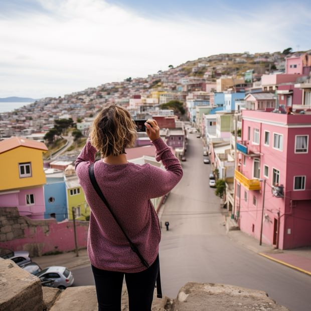

Nosotros
¿Quieres saber un poco de mi historia...?

Hola mi nombre es Camila!
Amo caminar por las calles y cerros de la ciudad, lo hago como una forma de vida, la cual me permitió descubrir como las personas se expresaban en los muros a través de frases, me sentí identificada tanto emocional como politicamente. Por ello comencé hace 10 años a fotografiar frases de los muros de edificios, bares y calles de Valparaíso. Luego encontré que a través de los estampados podía hacer rescatar los escritos y llevarlos a más personas a compartir nuestros setires.